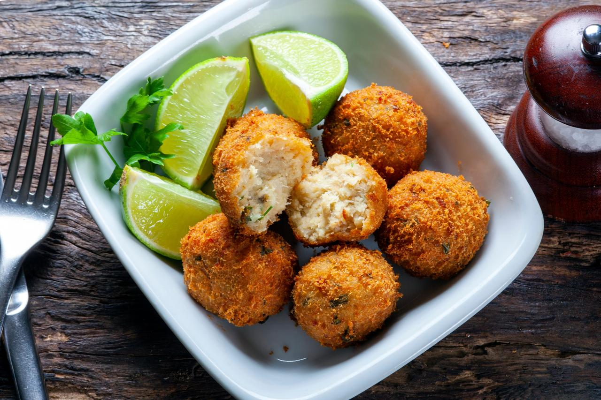

Les Accras de Morue
Véritable symbole de l'hospitalité antillaise, les accras de morue sont de petits beignets frits, dorés à souhait. Croustillants à l'extérieur et incroyablement moelleux à l'intérieur, ils ouvrent traditionnellement chaque repas de fête ou apéritif.
Préparés à base de morue émiettée et d'une pâte légère relevée d'herbes fraîches (cives, persil) et de piment, ils capturent toute l'identité et le caractère de la cuisine créole.
Le secret de leur préparation
La sélection de la morue demande un dessalage minutieux dans l'eau froide pendant plusieurs heures avant d'être pochée et émiettée. La pâte est ensuite réalisée avec de la farine, de l’eau ou du lait, et un peu de levure pour garantir une consistance légère, croustillante et bien aérée à la friture.
On y ajoute les aromates locaux finement hachés : ail, oignon, persil, cives, thym et une touche de piment antillais. Ils se dégustent brûlants, traditionnellement accompagnés d'une sauce pimentée (la sauce chien) ou d’un filet de citron vert.